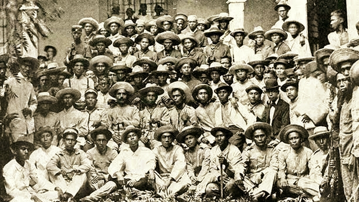
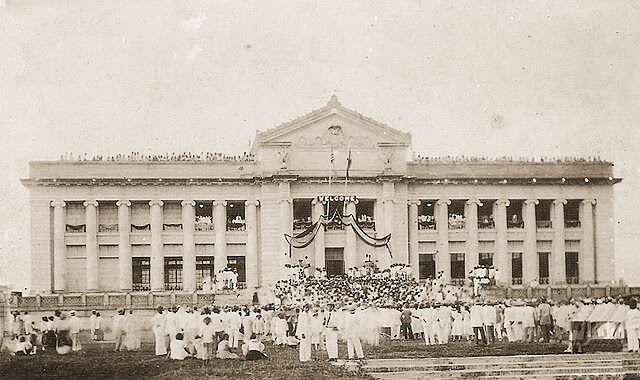

Historical Timeline of Pangasinan
Philippine Revolution and American Period
 December 27, 1897
December 27, 1897
General Emilio Aguinaldo is exiled to Hong Kong via Sual following the Pact of Biak-na-Bato.

July 22, 1898
A Katipunan board is established in Pangasinan, leading to the defeat of the remaining Spanish forces in Dagupan.
 February 5, 1899
February 5, 1899
President Emilio Aguinaldo relocates the provincial capital to San Carlos due to the Philippine-American War.
 November 20, 1899
November 20, 1899
American forces complete the conquest of Pangasinan.

February 16, 1901
The Taft Commission establishes Pangasinan as a civil province with Lingayen as the capital.